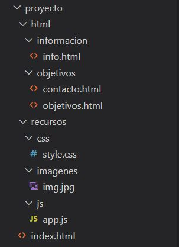

Tema 5 Organización de Archivos
Como desarrollador, tendrás muchos proyectos llenos de diferentes archivos de muchos tipos. Al ser desarrollador web, estos principalmente serán archivos HTML, CSS y JavaScript, aunque también puedes manejar PHP o Python, que son lenguajes que se utilizan en el back-end.
Independientemente del ambiente que tengas, es importante que sepas organizar tus archivos de la mejor manera. Esto te ayudará a encontrar tus archivos más rápido y, por ende, te ahorrará tiempo.
Estructura de un Proyecto
Además de los 3 tipos de archivos que mencionamos anteriormente, utilizarás imágenes, SVG's, fuentes y otros tipos de archivos. Pero, ¿cómo podemos organizar todo esto?
Típicamente en el desarrollo web, utilizamos ciertas carpetas para los diferentes tipos de archivos. En la mayoría de los casos son sólo dos: una carpeta nombrada "assets" ó "recursos" para nuestros archivos externos (sin extensión .html) y otra carpeta nombrada "html" que contiene todos los documentos HTML. Otra práctica común es tener el archivo HTML principal nombrado como "index.html". Este archivo no se guarda en la carpeta html, sino en la carpeta principal del proyecto ("PrimerProyectoWeb" en nuestro caso).

El archivo HTML principal, es el primer documento que ve el usuario, y usualmente es una página de inicio con información general de la página web. La estructura de ambas carpetas (html y recursos) puede variar un poco dependiendo del proyecto. Por ejemplo, en recursos podemos tener carpetas para archivos JavaScript, CSS e imágenes. En HTML podemos dividir los diferentes archivos en carpetas dependiendo de su contenido. Esta estructura de archivos se ve de la siguiente manera:
La estructura mencionada se puede utilizar tanto para proyectos pequeños como grandes, y es la que utilizaremos a lo largo del curso. Esto nos será de gran ayuda para buscar, cambiar y editar archivos de manera eficiente. Toma en cuenta que no todos los proyectos web utilizan esta estructura.
Como desarrollador, debes estar acostumbrado a tener bien organizados tus archivos en carpetas para navegarlas de manera intuitiva.